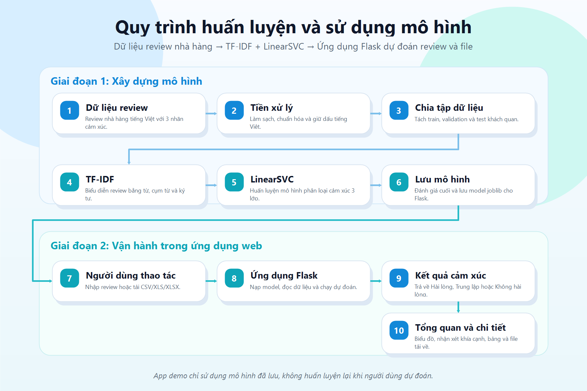
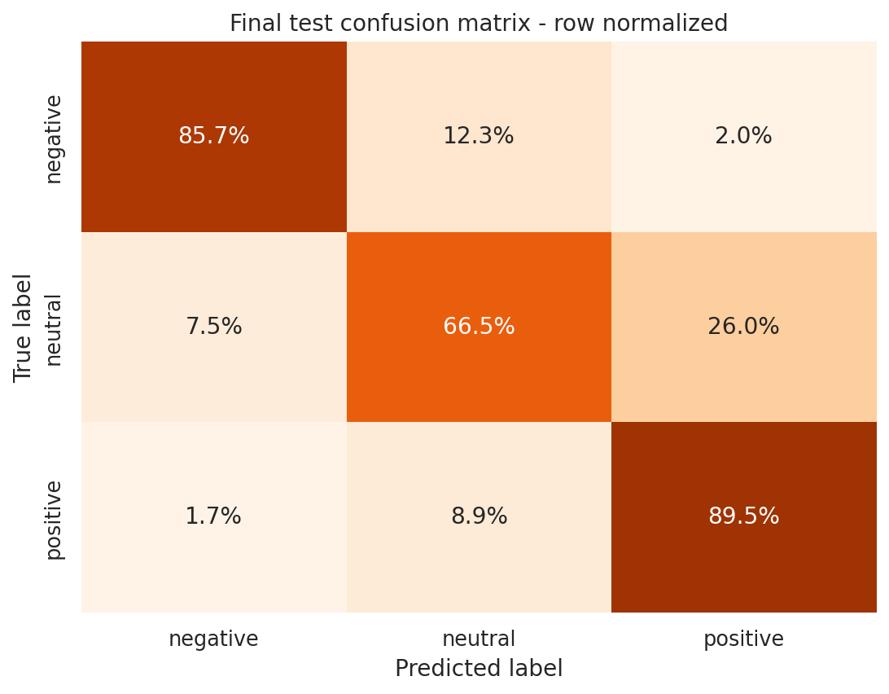

BK
Trường Đại học Bách khoa, Đại học Đà Nẵng
Lớp 22KTMT, học phần Trí tuệ nhân tạo
Lớp 22KTMT, học phần Trí tuệ nhân tạo
Nhóm 18
LẠI TIẾN ĐẠT, HUỲNH MINH THUẬN, LÊ THÀNH DUY
GV hướng dẫn: TS. HOÀNG LÊ UYÊN THỤC
LẠI TIẾN ĐẠT, HUỲNH MINH THUẬN, LÊ THÀNH DUY
GV hướng dẫn: TS. HOÀNG LÊ UYÊN THỤC
AI phân tích đánh giá nhà hàng
FoodMood
Biến hàng nghìn review tiếng Việt thành tín hiệu vận hành: hài lòng, trung lập, không hài lòng, kèm kết quả file để nhà hàng ra quyết định nhanh hơn.
01. Vì sao cần sản phẩm này?
Bài toán
- Nhà hàng nhận nhiều phản hồi rời rạc từ form, file Excel, mạng xã hội hoặc ứng dụng đặt món.
- Đọc thủ công dễ chậm, bỏ sót review tiêu cực và khó tổng hợp xu hướng dịch vụ.
- Review tiếng Việt thường có nhiều sắc thái, khen và chê xuất hiện trong cùng một câu.
Giải pháp
- Phân loại cảm xúc 3 lớp: Không hài lòng, Trung lập, Hài lòng.
- Cho phép nhập một review hoặc xử lý hàng loạt file CSV/XLS/XLSX.
- Xuất file kết quả có thêm cột sentiment_result để nhóm vận hành theo dõi.
02. Sản phẩm làm gì?
Dự đoán tức thìDán review tiếng Việt và nhận nhãn cảm xúc rõ ràng.
Xử lý hàng loạtTải Excel/CSV, tự nhận diện cột review phổ biến.
Góc nhìn vận hànhTheo dõi điểm nóng về món ăn, phục vụ, không gian, giá cả.
Kết quả mang điTải file dự đoán để báo cáo hoặc chuyển cho quản lý nhà hàng.
03. Kiến trúc kỹ thuật end-to-end
1DataVietnamese restaurant review sentiment dataset.
2Làm sạchXóa nhiễu, chuẩn hóa nhãn, loại text mâu thuẫn.
3TF-IDFTrích đặc trưng word + character n-gram.
4So sánh 30 cấu hìnhLinearSVC, Logistic Regression, Ridge.
5Web AppJoblib model, Flask UI, upload file, download kết quả.
04. Bằng chứng tin cậy
Accuracy84.06%
Macro F180.38%
Weighted F184.17%
Mô hình cuối: TF-IDF word/character features + LinearSVC. Dữ liệu sau làm sạch: 25.640 train, 3.165 validation, 3.137 test; loại 32 review có nhãn mâu thuẫn.
05. Ứng dụng sản phẩm
Nhập review
Món ăn ngon, phục vụ nhanh nhưng không gian hơi ồn.
Hài lòngTải file
reviews.xlsx, tự dò cột review, comment, content hoặc text.
Kết quả
Thêm cột sentiment_result và tải về file Excel mới.
- Quản lý nhà hàng lọc nhanh phản hồi cần xử lý trong ngày.
- Đội chăm sóc khách hàng ưu tiên review không hài lòng để phản hồi sớm.
- Chủ quán theo dõi xu hướng chất lượng dịch vụ theo từng đợt khảo sát.
- Nhóm nghiên cứu mở rộng thành dashboard phân tích trải nghiệm khách hàng.
06. Hình ảnh hệ thống và kết quả

Sơ đồ quy trình: review thô, xử lý, TF-IDF, mô hình, kết quả.

Ma trận nhầm lẫn giúp kiểm tra độ tin cậy của từng lớp cảm xúc.
07. Vì sao nên đầu tư vào FoodMood?
Nhu cầu thậtNhà hàng luôn cần hiểu khách hàng nhanh hơn thay vì đọc từng dòng phản hồi thủ công.
Có sản phẩm chạy đượcĐã có Flask web app, model joblib, nhập một review, upload file và tải kết quả.
Dễ mở rộngCó thể phát triển thành dashboard theo chi nhánh, cảnh báo review xấu và báo cáo định kỳ.